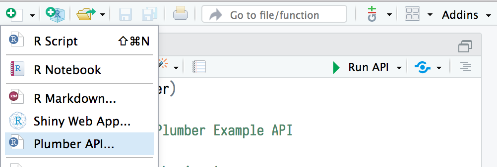
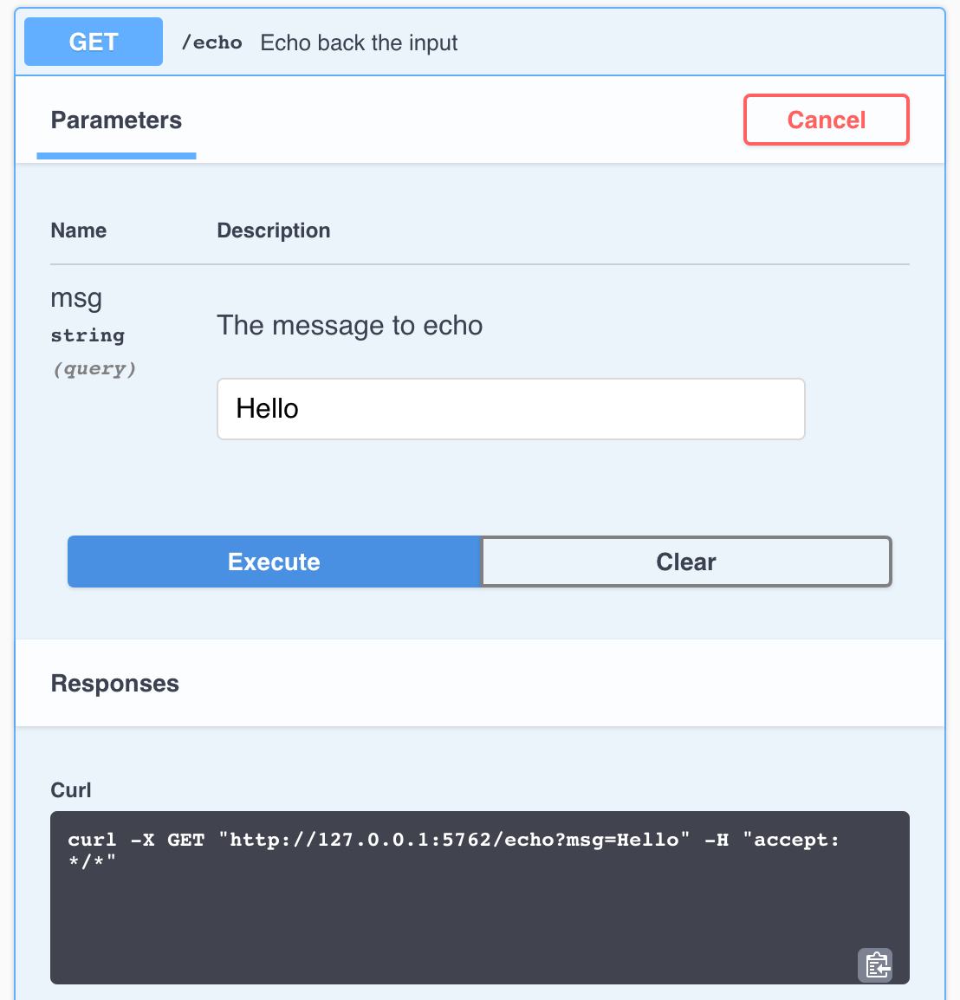

Download PDF
REST APIs with plumber :: Cheatsheet
Introduction to REST APIs
Web APIs use HTTP to communcation between client and server.
HTTP
HTTP is built around a request and a response. A client makes a request to a server, which handles the request and provides a response. Requests and responses are specially formatted text containing details and data about the exchange between client and server.
Request
GET / get HTTP/1.1 -> HTTP Method, Path, HTTP Version
Host:, User-Agent:, Accept: -> Headers
Request Body -> Message body
curl -v "http://httpbin.org/get"
#> GET / get HTTP/1.1
#> Host: httpbin.org
#> User-Agent: curl/7.55.1
#> Accept: */*
#
# Request BodyResponse
HTTP/1.1 200 OK -> HTTP Version, Status code, Reason phrase
Connection:, Date: -> Headers
Response Body -> Message body
#< HTTP/1.1 200 OK
#< Connection: keep-alive
#< Date: Thu, 02 Aug 2018 18:22:22 GMT
#
# Response BodyPlumber: Build APIs with R
Plumber uses special comments to turn any arbitrary R code into API endpoints. The example below defines a function that takes the msg argument and returns it embedded in additional text.
Plumber comments begin with #* and @ decoators define API characteristics. In HTTP methods such as @get the /<path> defines the location of the endpoint.
library(plumber)
#* @apiTitle Plumber Example API
#* Echo back the input
#* @param msg The message to echo
#* @get /echo
function(msg = "") {
list(
msg = paste0("The message is: '", msg, "'")
)
}Plumber piperline
Plumber endpoints contain R code that is executed in response to an HTTP request. Incoming requests pass through a set of mechanisms before a response is returned to the client.
Filters: Filters can forward requests (after potentially mutating them), throw errors, or return a response without forwarding the request. Filters are defined similarly to endpoints using the
@filter [name]tag. By default, filters apply to all endpoints. Endpoints can opt out of filters using the@preempttag.Parsers: Parsers determine how Plumber parses the incoming request body. By default Plumber parses the request body as JavaScript Object Notation (JSON). Other parsers, including custom parsers, are identified using the
@parser [parser name]tag. All registered parsers can be viewed withregistered_parsers().Endpoint: Endpoints define the R code that is executed in response to incoming requests. These endpoints correspond to HTTP methods and respond to incoming requests that match the defined method.
Methods
@get- request a resource@post- send data in body@put- store/update data@delete- delete resource@head- no request body@options- describe options@patch- partial changes@use- use all methods
Serializer: Serializers determine how Plumber returns results to the client. By default Plumber serializes the R object returned into JavaScript Object Notation (JSON). Other serializers, including custom serializers, are identified using the
@serializer [serializer name]tag. All registered serializers can be viewed withregistered_serializers().
Identify as filter with @filter, filter name is log, and forward request with forward():
library(plumber)
#* @filter log
function(req, res) {
print(req$HTTP_USER_AGENT)
forward()
}Define the endpoint description, opt out of the log filter, define the parser, HTTP method and endpoint path, and serializer:
#* Convert request body to uppercase
#* @prempt log
#* @parser json
#* @post /uppercase
#* @serializer json
function(req, res) {
toupper(req$body)
}Running Plumber APIs
Plumber APIs can be run programmatically from within an R session.
library(plumber)
# Path to API definition
plumb("plumber.R") |>
pr_run(port = 5762) # Specify API portThis runs the API on the host machine supported by the current R session.
IDE Integration

Documentation
Plumber APIs automatically generate an OpenAPI specification file. This specification file can be interpreted to generate a dynamic user-interface for the API. The default interface is generated via Swagger

Interact with the API
Once the API is running, it can be interacted with using any HTTP client. Note that using httr requires using a separate R session from the one serving the API.
(resp <- httr::GET("localhost:5762/echo?msg=Hello"))
#> Response [http://localhost:5762/echo?msg=Hello]
#> #> Date: 2018-08-07 20:06
#> Status: 200
#> Content-Type: application/json
#> Size: 35 B
httr::content(resp, as = "text")
#> [1] "{\"msg\":[\"The message is: 'Hello'\"]}"Programmatic Plumber
Tidy Plumber
Plumber is exceptionally customizable. In addition to using special comments to create APIs, APIs can be created entirely programatically. This exposes additional features and functionality. Plumber has a convenient “tidy” interface that allows API routers to be built piece by piece. The following example is part of a standard plumber.R file.
Use the @plumber tag, create a function that accepts and modifies a plumber router (pr), and use “tidy functions” like pr_get() and pr_post() for buildings out Plumber API.
library(plumber)
#* @plumber
function(pr) {
pr |>
pr_get(path = "/echo",
handler = function(msg = "") {
list(msg = paste0(
"The message is: '",
msg,
"'")
)
}) |>
pr_get(path = "/plot",
handler = function() {
rand <- rnorm(100)
hist(rand)
},
serializer = serializer_png()) |>
pr_post(path = "/sum",
handler = function(a, b) {
as.numeric(a) + as.numeric(b)
})
}OpenAPI
Plumber automatically creates an OpenAPI specification file based on Plumber componenets. This file can be further modified using pr_set_api_spec() with either a function that modifies the existing specification or a path to a .yaml or .json specification file.
library(plumber)
#* @param msg The message to echo
#* @get /echo
function(msg = "") {
list(
msg = paste0("The messahe is: '", msg, "'")
)
}
#* @plumber
function(pr) {
pr |>
pr_set_api_spec(
function(spec) {
spec$paths[["echo"]]$get$summary <- "Echo back the input"
spec # Return the updated specification
}
)
}By default, Swagger is used to interpret the OpenAPI specification file and generate the user interface for the API. Other interpreters can be used to adjust the look and feel of the user interface via pr_set_docs().
Advanced Plumber
Request and Response
Plumber provides access to special req and res objects that can be passed to Plumber functions. These objects provide access to the request submitted by the client and the response that will be sent to the client. Each object has several components, the most helpful of which are outlined below:
Request Objects
| Name | Example | Description |
|---|---|---|
req$pr |
plumber::pr() |
The Plumber router processing the request |
req$body |
list(a = 1) |
Typically the same as argsBody |
req$argsBody |
list(a = 1) |
The parsed body output |
req$argsPath |
list(c = 3) |
The values of the path arguments |
req$argsQuery |
list(e = 5) |
The parsed output from req$QUERY_STRING |
req$cookies |
list(cook = "a") |
A list of cookies |
req$REQUEST_METHOD |
"GET" |
The method used for the HTTP request |
req$PATH_INFO |
"/" |
The path of the incoming HTTP request |
req$HTTP_* |
"HTTP_USER_AGENT" |
All of the HTTP headers sent with the request |
req$bodyRaw |
charToRaw("a = 1") |
The raw() contents of the request body |
Response Objects
| Name | Example | Description |
|---|---|---|
res$headers |
list(header = "abc") |
HTTP headers to include in the response |
res$setHeader() |
setHeader("foo", "bar") |
Sets an HTTP header |
res$setCookie() |
setCookie("foo", "bar") |
Sets an HTTP cookie on the client |
res$removeCookie() |
removeCookie("foo") |
Removes an HTTP cooki4 |
res$body |
"{\"a\":[1]}" |
Serialized output |
res$status |
200 |
The response HTTP status code |
res$toResponse() |
toResponse() |
A list of status, headers, and body |
Async Plumber
Plumber supports asynchronous execution via the future R package. This pattern allows Plumber to concurrently process multiple requests.
library(plumber)
# Set the execution plan
future::plan("multisession")
#* @get /slow
function() {
promises::future_promise({
slow_calc() # Slow calculation
})
}Mounting Routers
Plumber routers can be combined by mounting routers into other routers. This can be beneficial when building routers that involve several different endpoints and you want to break each component out into a separate router. These separate routers can even be separate files loaded using plumb().
library(plumber)
# Create an initial router
route <- pr() |>
pr_get("/foo", function() "foo")
#* @plumber
function(pr) {
pr |>
pr_mount("/bar", route)
}In the above example, the final route is /bar/foo.
Running Examples
Some packages, like the Plumber package itself, may include example Plumber APIs. Available APIs can be viewed using available_apis(). These example APIs can be run with plumb_api() combined with pr_run().
library(plumber)
plumb_api(package = "plumber", # package name
name = "01-append", # API name
edit = TRUE) |> # optionally open the file for editing
pr_run() # run the example APIDeploying Plumber APIs
Once Plumber APIs have been developed, they often need to be deployed somewhere to be useful. Plumber APIs can be deployed in a variety of different ways. One of the easiest way to deploy Plumber APIs is using RStudio Connect, which supports push button publishing from the RStudio IDE.
CC BY SA Posit Software, PBC • info@posit.co • posit.co
Learn more at rplumber.io.
Updated: 2023-06.
packageVersion("plumber")[1] '1.2.1'